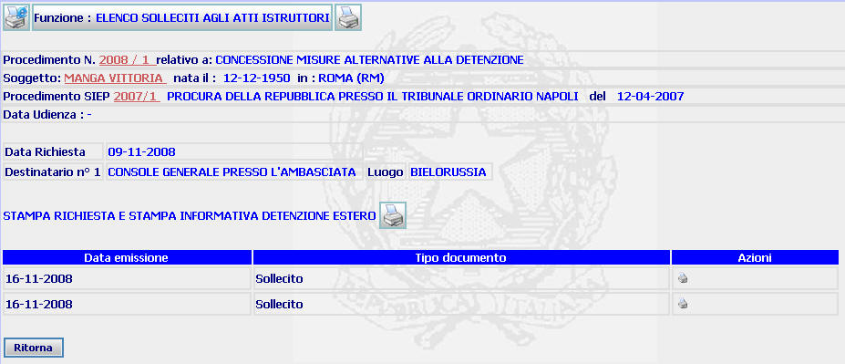

ELENCO SOLLECITI ATTI ISTRUTTORI: La funzione consente di visualizzare l'elenco dei solleciti eventualmente effettuati per l'atto istruttorio, stampare una copia dell'atto istruttorio originariamente richiesto e la nota di sollecito dello stesso.
LE MASCHERE VIDEO
La funzione viene realizzata attraverso la maschera seguente in cui compaiono gli estremi del procedimento Sius, il nome del soggetto, gli estremi del procedimento Siep e l'eventuale data di udienza, nonchè l'elenco dei solleciti eventualmente effettuati. Dalla maschera seguente è poi possibile stampare una copia dell'atto istruttorio originariamente richiesto, della nota di sollecito e di copia di quelle precedentemente create.

COME FARE PER ...
| Per visualizzare il dettaglio del procedimento Sius l'utente deve cliccare sul link relativo all'Anno/Numero del procedimento Sius evidenziato in rosso; |

| Per visualizzare il dettaglio del soggetto l'utente deve cliccare sul link relativo al cognome/nome del soggetto evidenziato in rosso; |

| Per visualizzare il dettaglio del procedimento Siep l'utente deve cliccare sul link relativo all' Anno/Numero del procedimento Siep evidenziato in rosso; |

|
Per
generare la stampa dell'atto istruttorio
originariamente richiesto l'utente deve
cliccare sul pulsante
|
|
Per
generare la stampa di una nuova nota di
sollecito l'utente deve
cliccare sul pulsante
|
|
Per
generare la stampa di una nota di
sollecito già richiesta l'utente deve
cliccare sul pulsante
|
| Per tornare alla maschera Richiesta documenti istruttori l'utente deve selezionare il bottone |
CAMPI
La maschera non presenta campi da compilare
PULSANTI
Sono
presenti
i pulsanti
 e
e
 facenti
parte del gruppo di
pulsanti di "Uso Comune"
facenti
parte del gruppo di
pulsanti di "Uso Comune"
BOTTONI
Oltre ai comandi funzionali relativi al menù verticale è presente il bottone attraverso il quale è possibile tornare alla maschera Richiesta documenti istruttori
CONTROLLI
La funzione non prevede alcun tipo di controllo